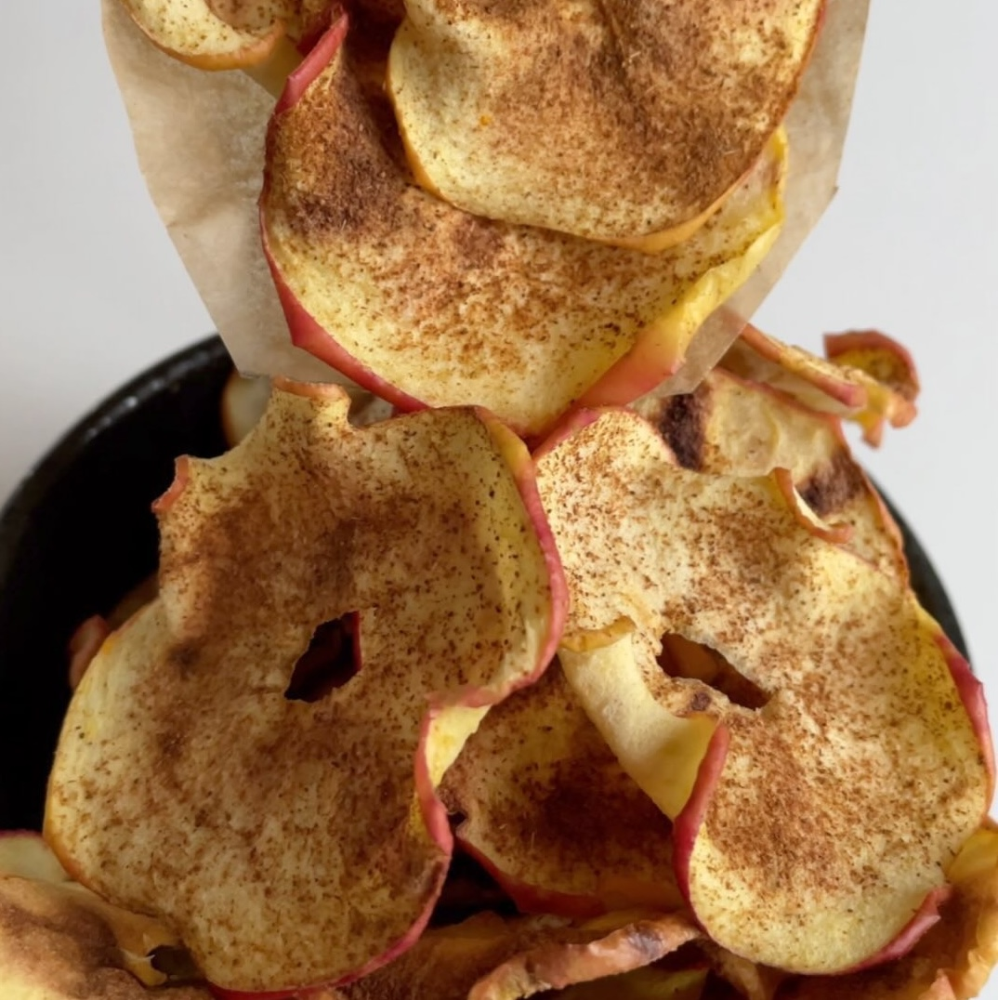

Chips de manzana
Ingredientes:
- 1 manzana (en rodajas muy finas)
- Pizca de Canela
Instrucciones:
- Cortar la manzana en rodajas muy finas y quitar el centro
- Espolvorear con canela
- Añade las manzanas en un plato con papel para hornear
- Llevar al microondas por 4 a 5 minutos o hasta que estén listas.